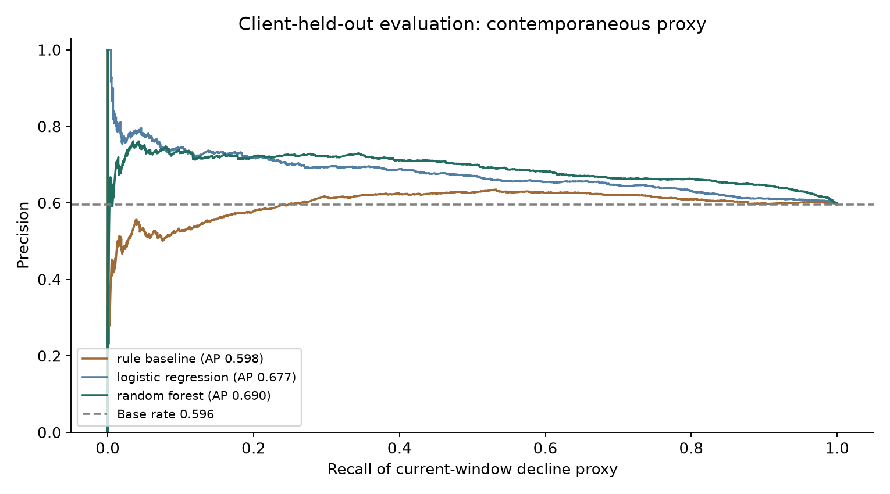
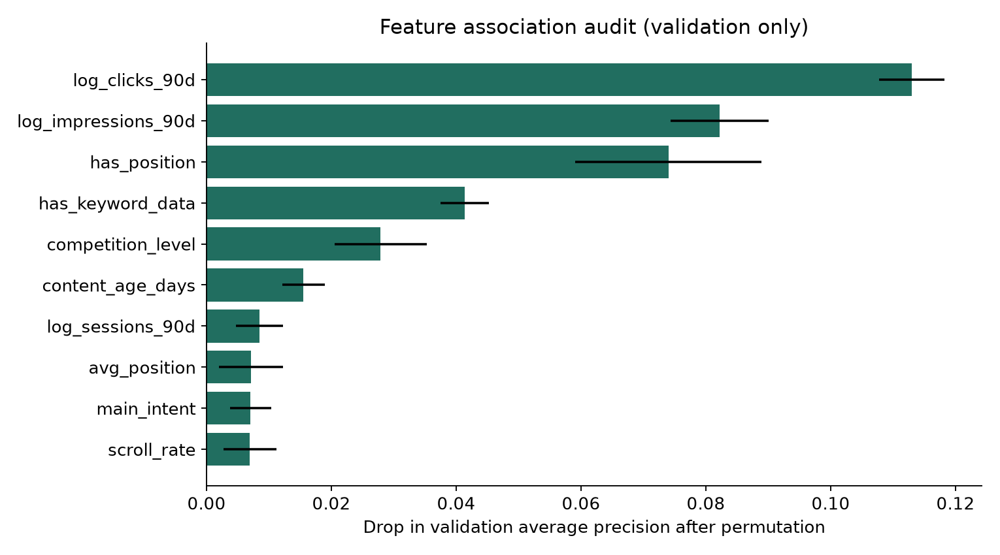
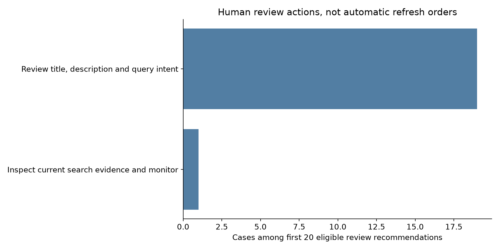

A measured ranking difference
Same 4,135 held-out pages across 8 clients. The outcome is an observed decline proxy. Higher precision does not demonstrate that an edit will improve traffic.
Author: Hamza Afzal · 9 October 2026 · Machine Learning capstone
Completed scope: a reproducible local starter study. The attached capstone brief points to the full warehouse; this study uses the starter dataset explicitly permitted for Ranking Signal Analysis in the supplied lane guide. Full-release analysis, intern/editor validation, owned-repository publication and a verified deployed paper URL remain pending. No full-warehouse results are claimed.
0. Abstract
This study asks whether safe content and contemporaneous search signals can prioritize review of pages associated with observed impression decline on clients held out from training. It uses 30,000 starter content items across 32 pseudonymized clients, with a current-window decline bucket as a proxy. A transparent training-fitted rule, logistic regression and a conservative random forest are compared using client-grouped training, validation and test partitions. The validation-selected logistic regression achieved held-out average precision 0.677 versus 0.598 for the rule, with precision@50 0.800 versus 0.420. The signal audit and reason-coded queue support human inspection and do not establish future decline prediction or causal editorial benefit.
1. Introduction and problem framing
An SEO/content editor must decide which visible pages to inspect with a limited review budget. The unit is one content item, the independent validation group is a client, and the output is a signal report plus a ranked review queue. The editor checks measurement quality, factual freshness, metadata, coverage and intent before deciding whether an edit is justified. An incorrect priority consumes review time or encourages unnecessary changes; a missed priority delays attention. These are qualitative costs, with no invented monetary estimate.
The question is whether safe signals associated with a measured current impression-decline proxy discriminate across held-out clients better than a transparent visibility/freshness rule. Models must earn their added complexity through a comparison fixed before test evaluation. Average precision is the model-selection metric; precision@50 measures a concrete review budget, with the proxy base rate shown beside it. This is a signal-analysis project with editorial decision support, rather than a claim to predict future outcomes.
2. Data and public safety
Input: the bundled data/raw/content_refresh_anonymized.csv, one page per row, 30,000 rows, 44 fields and 32 pseudonymized clients. Metrics represent a trailing 90-day window at starter export. The starter dictionary supplies no exact calendar end date; the warehouse's dates are not assigned to these rows. Eligibility requires positive impressions and age of at least 90 days; all 30,000 rows pass. The content and (client, content) grains are unique. The SHA-256 and exact counts are saved in the aggregate metrics JSON.
The current-decline proxy contains 16,262 rows (54.21%). There are 16,726 pages with at least 500 impressions, but only 17 satisfy both update age of at least 180 days and that impression floor. This weakens a stale-content-only story. Missing word count affects 7,699 rows, missing keyword context 2,468 rows, and missing position is represented by zero on 1,205 rows. Missingness is associated with content type, so flags accompany imputation.
Rate fields are percentages: CTR 0.76 means 0.76%. Position zero becomes missing measurement. Scroll rates above 100 are retained as documented cross-system measurements; 119 such rows exist. The model excludes AI traffic measurements, where measurement systems and sparsity complicate interpretation. IDs support local grouping and joins only. No IDs enter a model. Public outputs contain aggregate statistics, plots and synthetic case labels; a bounded, ignored local CSV maps cases to pseudonymized IDs for authorized use. No raw/private export, names, domains, page URLs, queries or credentials are included.
3. Baseline
The rule is fixed as 40% visibility, 30% freshness, 25% visibility-adjusted position opportunity and 5% visibility-adjusted depth gap. Visibility uses the empirical cumulative distribution of log impressions; freshness and depth use their corresponding empirical distributions. These distributions are fitted only on training clients during validation and only development clients during final testing. Position opportunity decreases linearly from measured position 1 to 50. Missing position and missing depth receive no opportunity bonus. The weights adapt the starter reference baseline while correcting whole-dataset transformation fitting and unknown-depth handling.
The rule uses no target field or trend-derived reason. Its final held-out AP is 0.5976, AUC 0.5296 and precision@50 0.42. Its score is a heuristic, with no probability or causal-impact interpretation.
4. Methodology and analysis
The proxy target is trend_direction == down: a deterministic bucket of observed impression decline beyond 20% between two current 30-day windows. It is not a future-outcome or editorial-utility label. Both trend fields, all six last/previous-30-day metrics, IDs and provider/model names are banned as features. Even after these exclusions, 90-day features overlap the proxy window; therefore the estimand is contemporaneous held-client discrimination.
Numeric features are search volume, competition, CPC, word count, log 90-day impressions/clicks/sessions, days with impressions/sessions, content age, days since update, CTR, measured average position, engagement rate, scroll rate, and keyword/depth/position/scroll-availability indicators. Categorical features are content type, competition level and main intent. Median imputation, logistic scaling and one-hot encoding are fitted within each model pipeline. Redundant tiers and character count are excluded.
Two fixed candidates are tested: logistic regression (C=1, maximum 1,500 iterations) and a 180-tree random forest (maximum depth 10, minimum leaf size 25, square-root feature subsampling). No hyperparameter search uses test outcomes. Logistic regression wins validation AP, 0.7519 versus 0.7475 for the forest, and is retained as the selected method. It is then refitted on training plus validation clients. The forest's higher final test AP does not justify switching models after looking at test results.
5. Evaluation and results
Client-grouped splitting holds out eight clients for final test (seed 2026), then six of the remaining clients for validation (seed 2027). Training has 24,099 rows/18 clients, validation 1,766 rows/six clients, and final test 4,135 rows/eight clients. All client sets are disjoint; all rows belong to exactly one partition. Baseline and models use the same partitions. Final test proxy base rate is 0.5956; a naive expected precision of 59.56% must be kept in view. The imbalance of client sizes makes row totals unequal despite splitting by client count.
| Method | ROC AUC | Average precision | Precision@50 | Precision@100 |
|---|---|---|---|---|
| Transparent rule | 0.5296 | 0.5976 | 0.42 | 0.48 |
| Selected logistic regression | 0.5972 | 0.6767 | 0.80 | 0.77 |
| Random forest, secondary comparator | 0.6379 | 0.6897 | 0.72 | 0.74 |


The operational >=500-impression subset contains 1,177 held-out pages and a 0.5981 proxy base rate. On this identical subset, selected-model AP is 0.6810 and precision@50 is 0.72; rule AP is 0.5474 and precision@50 is 0.42. Its forest comparator has AP 0.7106 and precision@50 0.78. The queue uses the validation-selected logistic model consistently.
A 400-draw held-out-client bootstrap yields a 95% percentile interval of [0.0395, 0.1398] for selected-model minus rule AP and [0.2395, 0.5400] for precision@50 difference on the full test set. Only eight client clusters are available, so these are limited within-sample uncertainty summaries. They do not validate the future, causal benefit, other releases or arbitrary populations. The macro-client AP is 0.7131 for the model versus 0.5896 for the rule; one of eight test clients has lower model AP than rule AP.
Among the full-test model's first 50, 40 have the proxy and ten do not. This is an observed ranking error count, not a count of useful versus useless edits. The no-position stratum has only 20 rows and no positive proxy labels; discrimination there is undefined. Small strata report their effective K rather than implying 50 distinct cases exist.
6. Interpretation and negative evidence
Validation permutation importance is largest for logged clicks (mean AP drop 0.1130), logged impressions (0.0822), measured-position availability (0.0740), and keyword availability (0.0413). These are associations inside a model with correlated signals. Position availability is a measurement indicator, not proof that a numerical ranking factor causes decline. Some features have zero or slightly negative permutation drops, so broad claims about keyword competition, freshness or depth are unsupported.

The metadata-only ablation removes traffic totals, rates and activity-day measures. Its AP is 0.5722 and AUC 0.4828, below useful discrimination against the 0.5956 test base rate. Much of the full model's signal therefore comes from overlapping current performance and measurement context; article metadata alone does not generalize well in this split. A shuffled-training-label control produces validation AP 0.3706 and AUC 0.3022, below its 0.4694 base rate. One shuffle is a limited diagnostic, and its precision@50 is nevertheless 0.62, illustrating how a small review budget can fluctuate. The control does not prove all forms of leakage are absent.
7. Ranked recommendations
Twenty eligible held-out cases are ranked by the selected current-proxy score. The bounded action output lists each synthetic review case, score, action, reason codes and uncertainty. Model scores are not calibrated probabilities of refresh benefit. The source target never enters action generation.
| Evidence cue | Human action | Required check |
|---|---|---|
| Missing search position | Check measurement before editing | Confirm availability and tracking |
| >=500 impressions, measured position 1–20, CTR <0.5% | Review title, description and query intent | Examine authorized query mix and relevance |
| Measured depth below 1,200 words | Review coverage and factual freshness | Inspect actual content before expanding |
| Update age >=180 days | Check accuracy and freshness | Confirm facts or product information changed |
| >=30 sessions and low engagement/scroll cue | Inspect relevance, layout and instrumentation | Separate measurement artifacts from friction |
| No specific contextual cue | Inspect current search evidence and monitor | Avoid automatic changes from score alone |

An editor should verify current evidence, inspect the authorized page, record accept/reject and rationale, and edit only if a substantive issue is found. The anonymized dataset contains no text or actual queries, so that editorial review remains pending. No automatic rewrite, merge or prune recommendation is asserted from these numeric proxies.
8. Limitations, reproducibility and next steps
This is an observational, older-visible-page starter sample from 32 clients. It lacks interventions, future labels, content text, authorized query interpretation and editorial utility outcomes. Availability differences, nonrandom missingness, seasonality and client shifts can explain some associations. Test AUC is modest despite improved top-50 precision. The eight-group evaluation and proxy definition limit conclusions; rerunning the same fixed split is reproducibility, not new evidence.
From a fresh checkout, create a Python environment, install requirements.txt plus nbformat, nbclient and ipykernel, then run:
python work/scripts/capstone_analysis.py
Execute the canonical capstone notebook top to bottom using that environment; it calls the same pipeline and regenerates JSON and figures. The final saved notebook has visible outputs. ML-02 framing, analysis source, metrics and exact versions, leakage audit, and feature audit are the evidence. The executed environment used NumPy 2.4.6, pandas 3.0.6, scikit-learn 1.9.1 and matplotlib 3.11.2. Random seeds and source checksum are recorded in JSON. Reference scripts and bundled data are unchanged; local mapping CSVs and future caches must remain ignored by git.
The warehouse continuation plan specifies manifest/grain/availability checks, middle-month development, prior-only features, future outcomes, client/time-aware validation and a single final cached scan. These steps need approved Hugging Face access and a locally supplied read token. Human validation and a public repository/deployed-paper URL are separate pending requirements. Put the verified direct paper URL, exactly one line, in submission/paper_url.txt only after publication, and submit the owned repository URL.
9. Acknowledgments and data credit
Built on the FlyRank ML Internship dataset. The repository's lane guide, dictionary and reference baseline informed the study. AI assistance supported implementation and document drafting; Hamza Afzal must validate, understand and own the decisions and outputs before submission.
Explore the review queue
These twenty cases demonstrate a ranked action playbook. The public labels are disposable presentation labels; they reveal no client identity or page metrics. Recommendations require human inspection.
01Review title, description and query intent0.941
Review case R01 · low_ctr_review, model_associated_with_current_decline_proxy
unvalidated editorial action; score is a current-proxy ranking, not causal benefit
02Review title, description and query intent0.909
Review case R02 · low_ctr_review, model_associated_with_current_decline_proxy
unvalidated editorial action; score is a current-proxy ranking, not causal benefit
03Review title, description and query intent0.902
Review case R03 · low_ctr_review, model_associated_with_current_decline_proxy
unvalidated editorial action; score is a current-proxy ranking, not causal benefit
04Review title, description and query intent0.901
Review case R04 · low_ctr_review, model_associated_with_current_decline_proxy
unvalidated editorial action; score is a current-proxy ranking, not causal benefit
05Review title, description and query intent0.895
Review case R05 · low_ctr_review, model_associated_with_current_decline_proxy
unvalidated editorial action; score is a current-proxy ranking, not causal benefit
06Inspect current search evidence and monitor0.895
Review case R06 · model_associated_with_current_decline_proxy
unvalidated editorial action; score is a current-proxy ranking, not causal benefit
07Review title, description and query intent0.894
Review case R07 · low_ctr_review, model_associated_with_current_decline_proxy
unvalidated editorial action; score is a current-proxy ranking, not causal benefit
08Review title, description and query intent0.893
Review case R08 · low_ctr_review, model_associated_with_current_decline_proxy
unvalidated editorial action; score is a current-proxy ranking, not causal benefit
09Review title, description and query intent0.885
Review case R09 · low_ctr_review, model_associated_with_current_decline_proxy
unvalidated editorial action; score is a current-proxy ranking, not causal benefit
10Review title, description and query intent0.885
Review case R10 · low_ctr_review, model_associated_with_current_decline_proxy
unvalidated editorial action; score is a current-proxy ranking, not causal benefit
11Review title, description and query intent0.883
Review case R11 · low_ctr_review, model_associated_with_current_decline_proxy
unvalidated editorial action; score is a current-proxy ranking, not causal benefit
12Review title, description and query intent0.882
Review case R12 · low_ctr_review, model_associated_with_current_decline_proxy
unvalidated editorial action; score is a current-proxy ranking, not causal benefit
13Review title, description and query intent0.882
Review case R13 · low_ctr_review, model_associated_with_current_decline_proxy
unvalidated editorial action; score is a current-proxy ranking, not causal benefit
14Review title, description and query intent0.878
Review case R14 · low_ctr_review, model_associated_with_current_decline_proxy
unvalidated editorial action; score is a current-proxy ranking, not causal benefit
15Review title, description and query intent0.875
Review case R15 · low_ctr_review, model_associated_with_current_decline_proxy
unvalidated editorial action; score is a current-proxy ranking, not causal benefit
16Review title, description and query intent0.875
Review case R16 · low_ctr_review, model_associated_with_current_decline_proxy
unvalidated editorial action; score is a current-proxy ranking, not causal benefit
17Review title, description and query intent0.874
Review case R17 · low_ctr_review, model_associated_with_current_decline_proxy
unvalidated editorial action; score is a current-proxy ranking, not causal benefit
18Review title, description and query intent0.873
Review case R18 · low_ctr_review, model_associated_with_current_decline_proxy
unvalidated editorial action; score is a current-proxy ranking, not causal benefit
19Review title, description and query intent0.871
Review case R19 · low_ctr_review, model_associated_with_current_decline_proxy
unvalidated editorial action; score is a current-proxy ranking, not causal benefit
20Review title, description and query intent0.870
Review case R20 · low_ctr_review, model_associated_with_current_decline_proxy
unvalidated editorial action; score is a current-proxy ranking, not causal benefit
Reproducibility downloads
Public GitHub repository · Executed capstone notebook · Research question notebook · Metrics receipt · Feature audit · Leakage audit · Ranked actions